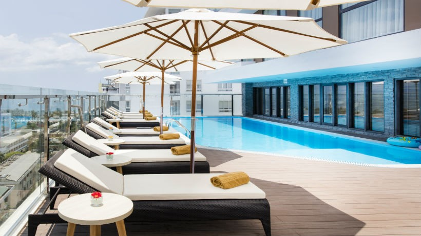
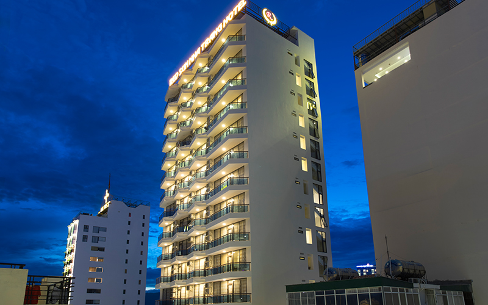

Thành phố Nha Trang là một trung tâm du lịch lớn của cả nước với nhiều danh lam thắng cảnh nổi tiếng, điều kiện thiên nhiên ưu đãi cả về vị trí, cảnh quan, khí hậu, cùng với nền tảng về lịch sử, nhân văn của mình. Nha Trang – Khánh Hoà có khả năng phát triển nhiều loại hình du lịch đa dạng. Nằm ở vị trí trung tâm tỉnh Khánh Hòa, thành phố Nha Trang có diện tích 251 km2, bao gồm 27 xã, phường và 19 hòn đảo, với trên 2.500 hộ và khoảng 15.000 người sống trên các đảo. Đảo lớn nhất là Hòn Tre rộng 36km2 nằm che chắn ngoài khơi khiến cho vịnh Nha Trang ( nằm trong số 29 vịnh đẹp nhất trên thế giới) trở nên kín gió và êm sóng. Nơi đây được nhiều du khách mệnh danh là “Hòn ngọc viễn đông” nhờ những bãi tắm đẹp, con đường nhựa xanh sạch, các ngôi biệt thự ẩn mình trong rừng hoa và cây xanh.
Tháp Bà Ponagar
Khu tưởng niệm Alexandre Yersin (Bảo tàng Yersin, Hòn Bà)
Hòn Tre
Hòn Tằm
Sông Lô
Bãi Tiên
Đồi La-San
Biệt thự Bảo Đại
Chùa Long Sơn
Tượng Kim Thân Phật Tổ
Chùa Đá Hang
Đảo Khỉ Cù lao
Viện Bảo tàng Hải dương học
Nhà thờ Chánh Tọa (nhà thờ núi)
Thủy Cung Trí Nguyên
Công viên Suối Tiên
Vinpearl land.
KHÁCH SẠN NHA TRANG
Nếu đã từng một lần đến với Nha Trang, du khách sẽ dễ dàng bị “đánh gục” bởi sự quyến rũ và năng động của thành phố biển xinh đẹp này.Tắm biển ở bãi Dài, thăm Tháp Bà Ponagar, tắm bùn, chơi các môn thể thao trên nước… là những trải nghiệm bạn nên thử khi tới Nha Trang.Bên cạnh đó đừng quên thưởng thức tô bún chả cá sứa hay những chiếc bánh xèo mực nóng hổi… bạn sẽ cảm nhận rõ rệt hương vị mặn mòi của phố biển..
KHÁCH SẠN KHU VỰC TRUNG TÂM


Khu vực trung tâm thành phố Nha Trang có rất nhiều nhà nghỉ, khách sạn, resort. Đây là khu vực sầm uất, náo nhiệt nhất Nha Trang, xung quanh có rất nhiều điểm du lịch đẹp của Nha Trang, nổi tiếng nhất là bãi biển trung tâm Nha Trang rất đẹp.
Phần lớn khách du lịch Nha Trang đều đặt phòng khách sạn ở khu vực trung tâm này vì dịch vụ rất phát triển, có nhiều nhà hàng, quán ăn ngon, nghỉ ở đây rất thuận tiện cho tắm biển và đi tham quan các điểm du lịch nổi tiếng của Nha Trang.
Giá phòng ở khu vực trung tâm khá cao, khách sạn tập trung trên tuyến đường Trần Phú, Hùng Vương, Nguyễn Thiện Thuật, Biệt Thự ... khách sạn khu vực này có view rất đẹp nhìn thẳng xuống biển, để tắm biển bạn chỉ cần đi bộ vài phút từ chỗ nghỉ là ra tới bãi biển.
ĐẶC SẢN NHA TRANG
Nha trang không chỉ nổi tiếng với những bãi biển trong xanh, những hòn đảo đẹp như mơ, mà nơi đây còn để lại ấn tượng với du khách bởi những món ngon khó cưỡng mang đậm hương vị của biển đảo.
Hải Sản Tươi Sống: Hải sản là 1 phần không thể thiếu trong ẩm thực Nha Trang, với bờ biển dài và có truyền thống khai thác hải sản lâu đời, nha trang chính là thiên đường cho những ai yêu thích các món ăn đậm chất biển.
Dưới đây là danh sách những món hải sản ngon nổi tiếng của Nha Trang
CÁC MÓN ỐC: Mùa ốc ngon nhất từ tháng 2 đến tháng 9. Sang tháng 10 là mùa ốc sinh sản, con ốc lúc này hết ngon bởi lạn sạn ốc con trong bụng. Thế nhưng, hầu như ở đây lúc nào cũng có ốc ngon phục vụ khách. Mỗi quán có những chiêu thức giữ hàng và bí quyết nuôi trồng hải sản.
Đi du lịch Nha Trang mà không thưởng thức một lần món ốc Nha Trang thì thật là phí hoài. Du khách có thể dễ dàng tìm được các món ốc ngon lạ như: ốc nhảy, gỏi ốc, ốc xào, ốc luộc, ốc nướng, cháo ốc, ốc xào sa tế.... ở Nha Trang, dưới đây là danh sách những loại ốc ngon nổi tiếng ở Nha Trang.